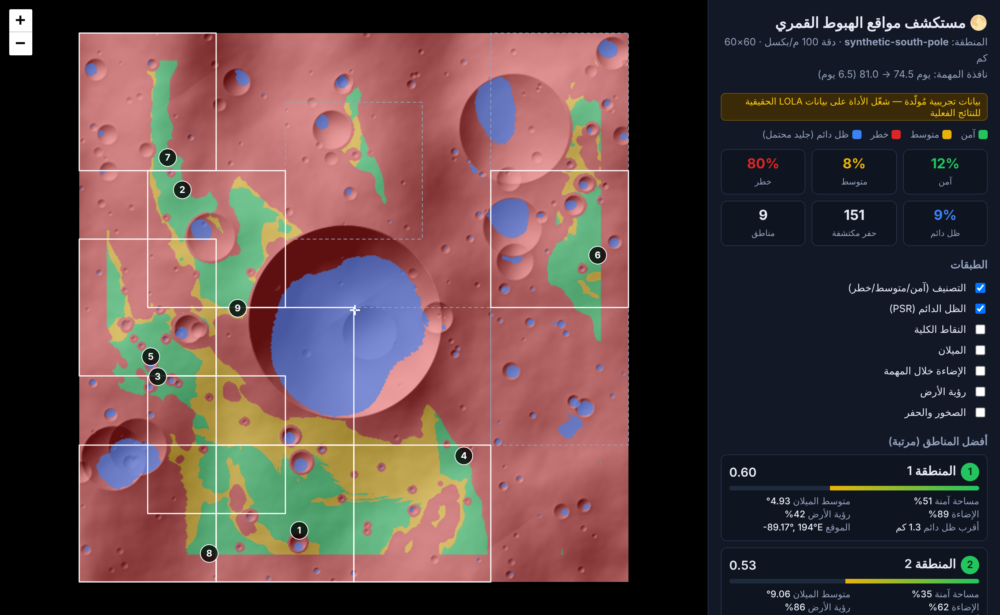
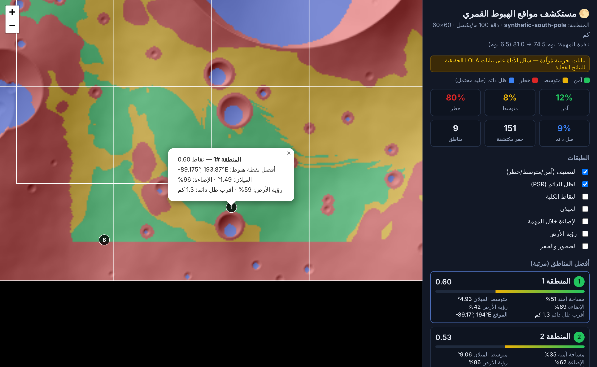
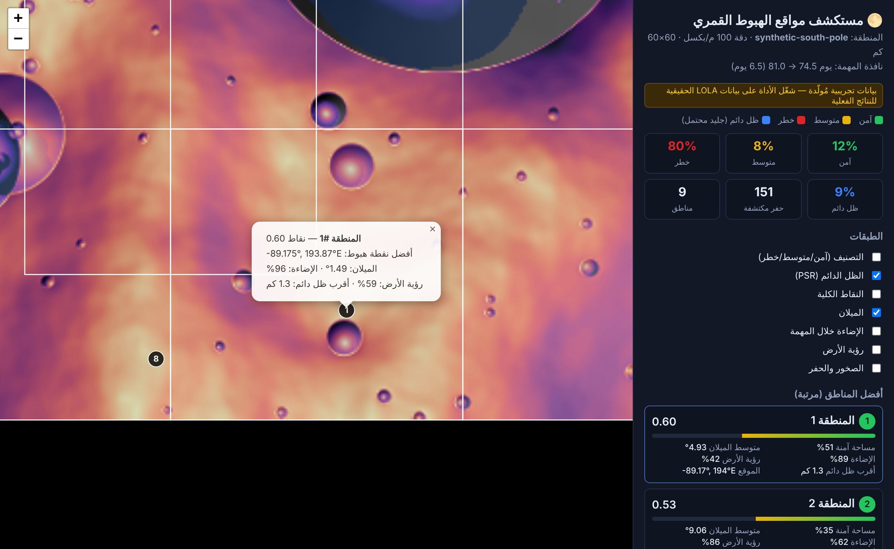
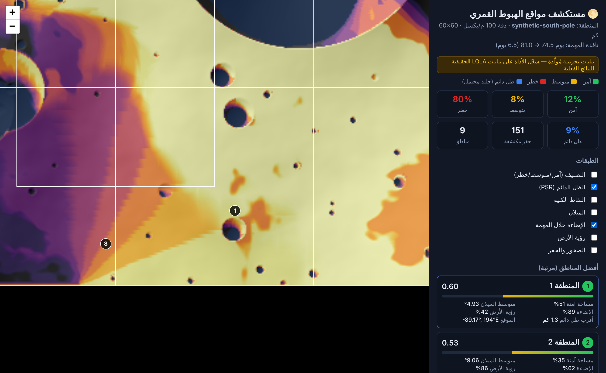
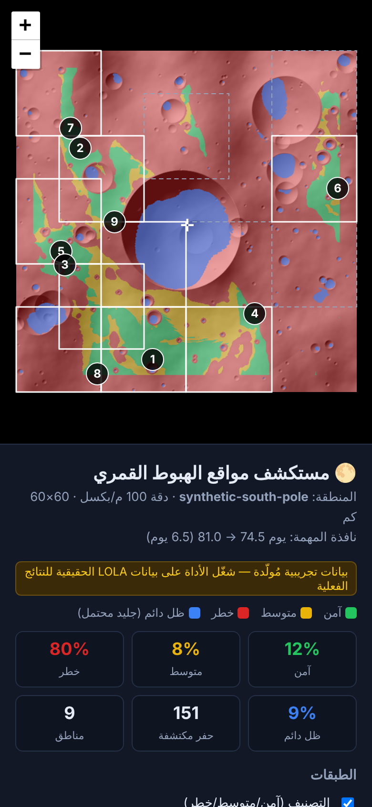

🌕 مستكشف مواقع الهبوط القمري
الدليل الكامل من الألف إلى الياء

المحتويات
- فكرة المشروع
- كيف ناسا تختار مكان الهبوط
- شروط المكان الآمن
- شكل النظام من فوق
- محتويات المشروع (الملفات)
- التثبيت على جهازك
- أول تشغيل (البيانات التجريبية)
- كيف تقرأ الخريطة والنتائج
- التشغيل على سيرفرات GitHub
- التحليل على بيانات ناسا الحقيقية: النتائج والتحقق
- كيف يشتغل النظام من الداخل
- تعديل الشروط والأوزان
- كشف الحفر والصخور بـ YOLO
- الاختبارات
- حدود النظام وأفكار للتطوير
- حل المشاكل الشائعة
- المصادر
1. فكرة المشروع
قبل ما تهبط أي مركبة على القمر لازم نعرف وين المكان الآمن. القطب الجنوبي بالذات صعب: الشمس دايمًا قريبة من الأفق، فالظلال طويلة جدًا، وفيه حفر عميقة ما تدخلها الشمس أبد. وهذي الحفر نفسها هي اللي يُحتمل فيها جليد ماء، يعني أهم مكان علميًا وأصعب مكان هندسيًا.
المشروع ياخذ خريطة الارتفاعات حقت القطب الجنوبي، ويحسب لكل نقطة فيها:
- كم ميلانها
- كم نسبة الوقت اللي تكون فيها تحت الشمس خلال المهمة
- كم نسبة الوقت اللي تكون فيها الأرض ظاهرة، عشان الاتصال
- كم تبعد عن أقرب حفرة مظلمة دايمًا
- كم فيها حفر وصخور
بعدها يعطي كل نقطة نقاط حسب أوزان معينة، ويقسم المنطقة لمربعات 15×15 كم، ويرتب أفضل 9 مناطق، ويعرضها على خريطة تفاعلية.
2. كيف ناسا تختار مكان الهبوط
عند ناسا مركبة اسمها LRO (Lunar Reconnaissance Orbiter) تدور حول القمر من 2009، وتجمع البيانات بثلاث أدوات رئيسية:
| الأداة | وش تقيس | وش يقابلها في مشروعنا |
|---|---|---|
| LOLA ليزر | ترسل نبضات ليزر للسطح وتقيس الارتفاع بدقة عالية، ومنها تطلع خرائط الارتفاع والميلان والإضاءة | terrain.py + illumination.py |
| Diviner حرارة | تقيس حرارة السطح. الصخور تبرد أبطأ من التراب في الليل، فتنكشف المناطق الصخرية | الخيار --rocks في hazards.py |
| LROC كاميرات | كاميرا NAC دقتها حوالي 0.5 م للبكسل، تشوف الحفر الصغيرة والصخور واحدة واحدة | YOLO في hazards.py |
بهالبيانات حددت ناسا 13 منطقة مرشحة قرب القطب الجنوبي لمهمة Artemis III، وبعدين قلّصتها لـ9 مناطق، وكل منطقة تقريبًا 15×15 كم. مشروعنا يمشي على نفس الخطوات: يختار 13 مرشحة، وبعدها يحتفظ بأفضل 9.
3. شروط المكان الآمن
| الشرط | القيمة | ليش مهم |
|---|---|---|
| الميلان | أقل من 8° إلى 10° | إذا الأرض مايلة أكثر من كذا، المركبة ممكن تنقلب أو ما تثبت |
| الإضاءة | شمس أغلب مدة المهمة (حوالي 6.5 يوم) | الطاقة من الألواح الشمسية، والحرارة لازمة للأجهزة |
| الاتصال بالأرض | الأرض تكون فوق الأفق | الاتصال المباشر يحتاج خط نظر مفتوح للأرض |
| القرب من الظل الدائم | كم كيلومتر | عشان رواد الفضاء أو الروبوتات يوصلون للجليد |
| الصخور والحفر | أقل ما يمكن | صخرة وحدة تحت رجل المركبة ممكن تخرّب الهبوط |
4. شكل النظام من فوق
5. محتويات المشروع (الملفات)
lunar-landing-navigator/
├── lunar_nav/ ← الكود الأساسي
│ ├── config.py ← الشروط والأوزان والثوابت الفيزيائية
│ ├── data.py ← البيانات التجريبية + قراءة ملفات ناسا
│ ├── terrain.py ← الميلان والخشونة والظل الفني للخريطة
│ ├── illumination.py ← الأفق، الشمس، الأرض، الظل الدائم
│ ├── hazards.py ← كشف الحفر + YOLO + خريطة الخطر
│ ├── scoring.py ← النقاط والتصنيف (أخضر/أصفر/أحمر)
│ ├── regions.py ← تقسيم المناطق وترتيبها وتحويل الإحداثيات
│ ├── pipeline.py ← يربط كل المراحل ببعض
│ ├── viz.py ← الخريطة التفاعلية وصورة الملخص
│ ├── cli.py ← أوامر التشغيل
│ └── vendor/ ← مكتبة الخرائط Leaflet (عشان تشتغل بدون إنترنت)
├── scripts/download_nasa_data.py ← تنزيل بيانات ناسا
├── tests/test_pipeline.py ← الاختبارات
├── docs/guide/ ← هذا الدليل
├── requirements.txt
└── README.md
.github/workflows/lunar-navigator.yml ← التشغيل على سيرفرات GitHub6. التثبيت على جهازك
المتطلبات
- Python 3.10 أو أحدث. تنزله من python.org، وفي ويندوز فعّل خيار "Add Python to PATH" وقت التثبيت.
- Git، عشان تنزل المشروع من GitHub. هذا اختياري، تقدر تنزله ملف مضغوط بداله.
الخطوات
- نزّل المشروع:
الـ repo عام، فما يحتاج تسجيل دخول. وتقدر بعد تضغط Code ← Download ZIP من صفحة الـ repo.git clone https://github.com/ELD11q/-ahs.git cd -ahs/lunar-landing-navigator - سوّ بيئة بايثون خاصة بالمشروع (مستحسن):
# ويندوز python -m venv .venv .venv\Scripts\activate # ماك / لينكس python3 -m venv .venv source .venv/bin/activate - ثبّت المكتبات:
المكتبات هي:pip install -r requirements.txtnumpyوscipy: للحساباتmatplotlibوpillow: للصورrasterio: لقراءة ملفات ناسا GeoTIFFnumba: لتسريع حساب الأفق أكثر من 100 مرةastropy: لحساب مواقع الشمس والأرض الحقيقيةpytest: للاختبارات
- تأكد إن كل شي شغال:
python -m pytest -q # المفروض يطلع: 15 passed
7. أول تشغيل (البيانات التجريبية)
python -m lunar_nav --demo--nasa، وهو مشروح في الفصل 10.هذا يولّد منطقة قطبية تجريبية مساحتها 60×60 كم. فيها حفرة كبيرة عميقة جنب القطب (شبه حفرة Shackleton) أرضيتها مظلمة دايمًا، وسلسلة مرتفعات مضيئة، وحوالي 220 حفرة صغيرة، وحقول صخور. التحليل ياخذ تقريبًا 30 ثانية، ويطلع شي زي كذا:
[1/5] slope: 69.0% of area <= 10.0 deg
[2/5] illumination: mission mean 0.38, PSR 9.1% of area, Earth visible 0.67
[3/5] hazards: 151 craters detected
[4/5] classes: green 12.1% yellow 7.7% red 80.2%
[5/5] regions: 13 candidates -> top 9
Top regions:
# score safe slope illum earth PSR km lat/lon
1 0.60 51% 1.5° 96% 59% 1.30 -89.175, 193.9E
2 0.53 35% 0.3° 100% 100% 2.22 -89.248, 304.5E
...المخرجات (مجلد output/)
| الملف | وش فيه |
|---|---|
landing_sites_map.html · landing_sites_map_en.html | الخريطة التفاعلية بالعربي والإنجليزي، تفتحها بأي متصفح وتشتغل بدون إنترنت |
summary.png | صورة فيها كل الطبقات جنب بعض |
ranked_regions.csv | ترتيب المناطق، تقدر تفتحه بـ Excel |
ranked_regions.json | نفس الترتيب بصيغة JSON، للبرامج |
layers.npz | كل الطبقات كمصفوفات numpy، لو تبغى تحللها بنفسك |

8. كيف تقرأ الخريطة والنتائج

- المربعات البيضاء: أفضل 9 مناطق، وكل منطقة 15×15 كم.
- المربعات المنقطة الرمادية: المناطق المرشحة اللي انستبعدت (من 10 إلى 13).
- الدوائر المرقمة: أفضل نقطة هبوط داخل كل منطقة.
- علامة ✛: مكان القطب الجنوبي.
- اضغط على أي منطقة في القائمة، والخريطة تقرّب عليها وتطلع تفاصيلها.



معنى الأعمدة في الجدول
| العمود | المعنى |
|---|---|
| score | نقاط المنطقة من 0 إلى 1. تُحسب من نسبة المساحة الآمنة (45%)، والمساحة المتوسطة (15%)، ومتوسط أفضل 5% من النقاط فيها (40%) |
| safe | نسبة المساحة الخضراء داخل المنطقة |
| slope / illum / earth | الميلان، ونسبة الإضاءة، ونسبة رؤية الأرض عند أفضل نقطة هبوط |
| PSR km | المسافة من نقطة الهبوط لأقرب ظل دائم |
| lat / lon | خط العرض والطول على القمر |

9. التشغيل على سيرفرات GitHub (GitHub Actions)
المشروع فيه ملف .github/workflows/lunar-navigator.yml. هذا الملف يخلي GitHub يشغّل النظام كامل على سيرفراته، بدون ما تحتاج جهازك.
متى يشتغل تلقائي؟
- كل ما ترفع تعديل على ملفات المشروع (push).
- كل ما تفتح Pull Request.
وش يسوي في كل تشغيل؟
- يجهز سيرفر Ubuntu عليه Python 3.12 ويثبت المكتبات.
- يشغّل الاختبارات الـ15، وإذا فشل واحد يوقف ويعلمك.
- ينزّل بيانات ناسا الرسمية (حوالي 1.2 جيجا) من خوادم NASA Goddard. أول مرة بس، وبعدها يحفظها في الكاش.
- يشغّل التحليل كامل على بيانات ناسا، مع نوافذ 2027 والتحقق من الدقة. ياخذ حوالي 3 إلى 5 دقايق.
- يكتب جدول أفضل المناطق ونتائج التحقق في صفحة نتيجة التشغيل نفسها.
- يرفع الخريطة التفاعلية والصور والتقرير والجداول كملف تنزله (Artifact) ويحتفظ فيه 30 يوم.
كيف تشغّله يدويًا وتشوف النتيجة
- افتح الـ repo في GitHub واضغط تبويب Actions.
- من القائمة اليسار اختر Lunar Landing Navigator.
- اضغط Run workflow. تقدر تغيّر الإعدادات أو تخليها زي ما هي، وبعدين اضغط الزر الأخضر Run workflow.
- انتظر كم دقيقة لين تطلع علامة ✅.
- افتح التشغيل، وبتلقى جدول النتائج في الصفحة، وتحته قسم Artifacts فيه ملف landing-sites-nasa. نزّله وفك الضغط، وافتح
landing_sites_map.html.
الإعدادات اللي تقدر تغيّرها وقت التشغيل اليدوي
| الإعداد | الوظيفة |
|---|---|
mode | nasa (الافتراضي): بيانات ناسا الرسمية · demo: البيانات التجريبية · custom: ملف ارتفاعات من اختيارك |
year | سنة المهمة اللي تنحسب نوافذها (الافتراضي 2027) |
max_slope | أقصى ميلان مسموح بالدرجات |
dem_url و pixel_size و downsample و dem_scale | لوضع custom بس: رابط الملف، ودقة البكسل، ومعامل التصغير، ومعامل التحويل لمتر |
10. التحليل على بيانات ناسا الحقيقية: النتائج والتحقق
هذا هو الوضع الرئيسي للمشروع. أمر واحد ينزّل بيانات ناسا الرسمية ويحللها كاملة:
python -m lunar_nav --nasa -o output
# خيارات: --year 2027 --half-width-km 240 --res 80 --max-slope 10أول تشغيل ينزّل حوالي 1.2 جيجا لمجلد data/nasa، والتحليل ياخذ حوالي 2.5 دقيقة على جهاز عادي فيه 4 أنوية.
أ) البيانات الرسمية المستخدمة
| الطبقة | الملف | المصدر |
|---|---|---|
| الارتفاع | LDEM_80S_80MPP_ADJ.TIF (80 m/px) | Barker et al. 2023: أحدث خريطة LOLA للقطب الجنوبي (PGDA 90) |
| الميلان | LDSM_80S_80MPP_ADJ.TIF | Barker et al. 2023 |
| الخشونة (بدل الصخور) | LDRM_80S_50MPP_ADJ_ROUGH_100M.TIF | Barker et al. 2023 |
| متوسط الإضاءة لمدة 18.6 سنة | AVGVISIB_75S_120M_201608.TIF | Mazarico et al. 2011 (PGDA 69) |
| متوسط رؤية الأرض | AVGVISIB_75S_120M_201608_EARTH.TIF | Mazarico et al. 2011 |
| الظل الدائم (PSR) | LPSR_75S_120M_201608.TIF | Mazarico et al. 2011 |
كل الملفات بنفس الإسقاط القطبي، فالنظام يركّبها على شبكة وحدة مساحتها 480×480 كم بدقة 80 م (36 مليون بكسل). وتأكدنا من دقة الإحداثيات: إحداثيات حفرة Shackleton من دليل IAU تطلع على عمق −2788 م داخل ظل دائم.
ب) خطوات التحليل
- منطقة استكشاف Artemis: نحصر البحث في دائرة 6° حول القطب (لين خط عرض 84° جنوب تقريبًا)، وهذا شرط ناسا لمهمة Artemis III.
- النقاط والتصنيف: نفس المعايير الخمسة، لكن بقيم معايرة على توزيع البيانات الحقيقية. متوسط الإضاءة لمدة 18.6 سنة حتى في أفضل المواقع حوالي 0.35 إلى 0.5، لأنه يشمل الشتاء القطبي.
- المناطق: نختار 13 منطقة مرشحة، كل وحدة 15×15 كم، ما تتداخل، وبينها 20 كم على الأقل. المنطقة تاخذ نقاط كاملة على المساحة الآمنة إذا كانت كافية (15% من مساحتها)، والباقي يعتمد على جودة أفضل المواقع فيها.
- نوافذ الإطلاق الحقيقية لعام 2027: لكل منطقة مرشحة نحسب أفق أفضل نقطة فيها في 128 اتجاه لين 150 كم، ونحرّك الشمس والأرض ساعة بساعة بمواقعها الحقيقية على مدار السنة. بعدها نعد النوافذ اللي مدتها 6.5 يوم ويكون فيها ضوء متواصل.
- الاختيار النهائي من 13 إلى 9: 60% من نقاط التضاريس والمعايير، و40% من توفر نوافذ الإطلاق. هذا نفس منطق ناسا في تقريرها (NTRS 20250011660): المناطق اللي تعطي فرص إطلاق أكثر على مدار السنة تتقدم.
ج) النتائج: أفضل 9 مناطق
| # | الموقع | نوافذ 2027 | أفضل نافذة (UTC) | رؤية الأرض | أقرب ظل دائم | قريبة من منطقة ناسا |
|---|---|---|---|---|---|---|
| 1 | 85.08°S, 37.2°E | 36% | 2027-01-09 | 81% | 2.3 كم | Mons Mouton، Nobile Rim 1 و 2 |
| 2 | 85.01°S, 143.0°E | 28% | 2027-03-10 | 33% | 1.6 كم | — |
| 3 | 84.11°S, 32.7°E | 26% | 2027-01-13 | 83% | 1.2 كم | Mons Mouton |
| 4 | 85.34°S, 127.6°E | 25% | 2027-03-09 | 33% | 1.7 كم | — |
| 5 | 84.58°S, 27.0°E | 24% | 2027-01-13 | 87% | 2.2 كم | Mons Mouton |
| 6 | 84.38°S, 39.2°E | 24% | 2027-01-12 | 80% | 0.6 كم | Mons Mouton، Nobile |
| 7 | 84.23°S, 109.1°E | 24% | 2027-02-10 | 34% | 2.2 كم | — |
| 8 | 84.76°S, 134.5°E | 23% | 2027-03-09 | 33% | 0.6 كم | — |
| 9 | 86.01°S, 290.1°E | 23% | 2027-06-22 | 56% | 0.6 كم | — |
"نوافذ 2027" معناها نسبة اللحظات في السنة اللي لو بدأت فيها المهمة، تحصل 6.5 يوم ضوء متواصل. كل المناطق ميلان أفضل نقطة فيها أقل من 1°. ناسا نفسها تقول إن "كل منطقة لوحدها تعطي فرص محدودة"، وعشان كذا تحتفظ بأكثر من منطقة، ونتائجنا (23% إلى 36%) تأكد هذا الكلام.


د) التحقق من الدقة
1. نموذج الإضاءة مقابل خرائط ناسا: حسبنا متوسط 18.6 سنة بأنفسنا لـ 111,556 نقطة × 13,588 لحظة زمنية، وقارنّاه نقطة بنقطة بخرائط ناسا الرسمية:
| الارتباط r | متوسط الخطأ | نسبة النقاط اللي خطأها أقل من 10 نقاط | |
|---|---|---|---|
| ☀️ الشمس | 0.91 | 3.7 نقطة مئوية | 91% |
| 🌍 الأرض | 0.94 | 5.8 نقطة مئوية | 84% |

2. مقارنة مع دراسة علمية مستقلة (Peña-Asensio وزملاؤه 2024، arXiv:2406.19863). هذي الدراسة رتبت 1247 نقطة في مناطق ناسا الـ13 بطريقة TOPSIS وبيانات مختلفة عن بياناتنا. النتيجة: 70% من أفضل 20 نقطة عندهم تقع ضمن أفضل 10% من خريطتنا، وأفضل نقطة عندهم (Nobile Rim 2، 84.20°S, 60.70°E) تطلع عندنا "آمنة" وأعلى من 94% من المنطقة.
3. مقارنة مع مناطق ناسا التسع (أكتوبر 2024): مناطقنا التسع تغطي 4 من 9 مناطق ناسا (Mons Mouton و Mons Mouton Plateau و Nobile Rim 1 و Nobile Rim 2)، ومرشحينا الـ13 يغطون 5 من 9 لأنهم يضيفون Malapert Massif. وحول 8 من 9 مناطق ناسا فيه نقاط عندنا ضمن أفضل 1% من الخريطة. الاستثناء Cabeus B، لأن مَعْلمها خارج منطقة البحث.
- ناسا ما تنشر حدود مناطقها، فنحدد مكان كل منطقة بالمَعْلم اللي سُمّيت عليه.
- المَعْلم Cabeus B نفسه يقع خارج دائرة 84° اللي نشتغل فيها، مع إن المنطقة اللي ناسا سمتها عليه أقرب للقطب.
- ناسا تعتمد كمان على قيود ما تدخل في نموذجنا: مدار NRHO، ومسارات الإطلاق، وتصميم مركبة SpaceX HLS، وصور LROC بدقة 0.5 م للصخور.
كل هذي الأرقام تنحفظ تلقائي في REPORT.md و REPORT_EN.md و validation.json داخل مجلد المخرجات، ونسخة منها موجودة في المشروع في results/nasa_2027/.
هـ) ملف ارتفاعات من اختيارك (وضع custom)
python scripts/download_nasa_data.py --list # روابط المصادر الرسمية
python scripts/download_nasa_data.py <رابط> -o data/
python -m lunar_nav --dem data/<الملف>.tif --pixel-size 20 --downsample 4 \
[--rocks data/rocks.tif] [--illum data/avg_illum.tif]--pole ROW COL. ولملفات .IMG اقرأ ملف .LBL اللي معها وحدد --dem-scale.11. كيف يشتغل النظام من الداخل
الخطوة 1: الميلان (terrain.py)
لكل بكسل نحسب فرق الارتفاع مع جيرانه في الاتجاهين، ونحوّله لزاوية:
slope = arctan( √( (∂z/∂x)² + (∂z/∂y)² ) )ونحسب بعد الخشونة: نشيل الاتجاه العام للأرض ونقيس الانحراف المعياري للتضاريس الصغيرة. المنطقة الخشنة حتى لو ميلانها العام قليل فيها خطر.
الخطوة 2: الأفق (illumination.py)
هذي أهم خطوة. في القطب الجنوبي الشمس ما ترتفع أكثر من حوالي 1.5° فوق الأفق، فأي تل صغير يقدر يحجبها. عشان كذا لكل بكسل نرمي أشعة في 32 اتجاه لين مسافة 40 كم، ونسجل أعلى زاوية أفق في كل اتجاه. وندخل في الحساب انحناء القمر، لأن الجبل البعيد ينزل تحت الأفق بمقدار:
drop = d² / (2R) R = 1737.4 km (نصف قطر القمر)الخطوة 3: حركة الشمس والأرض
- الشمس تلف حول سماء القطب مرة كل 29.5 يوم، وارتفاعها يتغير بين −1.54° و +1.54° على مدار 346.6 يوم، وهذي "فصول" القمر.
- الأرض ثابتة تقريبًا باتجاه الوجه القريب، لكنها تتمايل (libration) ±6.7° فوق وتحت الأفق كل 27.2 يوم تقريبًا.
- كل ما بعدت النقطة عن القطب، تتغير زاوية الجسم في سماها بمقدار: colatitude × cos(Δazimuth).
بعدها نحرك الشمس والأرض كل 3 ساعات طول مدة المهمة، ونقارن ارتفاعهم بالأفق اللي حسبناه، ونطلع نسبة الوقت اللي يكونون فيها ظاهرين.
وعشان نختار وقت المهمة، النظام يدوّر على أفضل 6.5 يوم في السنة: يكون فيها صيف القطب الجنوبي، والأرض فوق الأفق أغلب الوقت. نفس الشي اللي تسويه ناسا لما تختار نافذة الإطلاق.
--nasa) نستخدم نسخة أدق من هذي الخطوة:
- مواقع حقيقية للشمس والأرض لأي تاريخ، من مكتبة astropy (تقويم ERFA المدمج، يشتغل بدون إنترنت).
- اتجاه القمر في الفضاء من نموذج الاتحاد الفلكي الدولي (IAU 2009، Archinal وزملاؤه 2011). وتأكدنا من النتائج: تمايل الأرض ±6.8° و±7.7°، وارتفاع الشمس ±1.55°، والمسافة من 357 إلى 407 ألف كم.
- الأفق يُحسب بتتبع الأشعة على خريطة LOLA نفسها (حتى 150 كم وفي 64 إلى 128 اتجاه) مع انحناء القمر. وفرق الزاوية من مكان الراصد للأرض (parallax) داخل في الحساب.
- الكود مكتوب بـ numba، فحساب ملايين النقاط على آلاف اللحظات الزمنية ياخذ ثواني بس.
الخطوة 4: الظل الدائم (PSR)
نحسب الإضاءة على مدار 6 سنوات قمرية، وأي بكسل متوسط إضاءته أقل من 0.5% ينحسب ظل دائم. هذي الأماكن حرارتها تقريبًا −230°C، وهي اللي يُحتمل فيها جليد الماء. بعدين نحسب لكل بكسل المسافة لأقرب ظل دائم.
الخطوة 5: الحفر والصخور (hazards.py)
بدون ذكاء اصطناعي: نطرح من الخريطة نسخة منعّمة منها على 3 مقاييس مختلفة، والأماكن اللي تطلع أوطى بوضوح من محيطها هي حفر. وبعدها نجمع الحفر مع الخشونة ومع خريطة صخور Diviner لو موجودة، ويطلع لنا مؤشر خطر من 0 إلى 1.
الخطوة 6: النقاط والتصنيف (scoring.py)
كل معيار يتحول لرقم من 0 (سيء) إلى 1 (ممتاز):
| المعيار | التحويل | الوزن الافتراضي |
|---|---|---|
| الميلان | 1 − الميلان ÷ 10° | 30% |
| الإضاءة | نسبة الإضاءة خلال المهمة | 25% |
| رؤية الأرض | نسبة الوقت اللي الأرض ظاهرة فيه | 15% |
| القرب من الظل الدائم | 1 إذا المسافة أقل من 2 كم، وينزل بالتدريج لين يوصل 0 عند 15 كم | 15% |
| الصخور والحفر | 1 − مؤشر الخطر | 15% |
النقاط الكلية = مجموع (الوزن × نقاط المعيار)
وبعدها التصنيف:
- أحمر: ميلان فوق 10°، أو ظل دائم، أو إضاءة المهمة أقل من 30%، أو خطر صخور فوق 0.6. ونوسّعه 300 م (قطع الهبوط)، ونستبعد بعد أطراف الخريطة (3 كم) لأن الأفق اللي وراها مو معروف.
- أصفر: ميلان بين 8° و 10°، أو رؤية الأرض أقل من 30%، أو النقاط الكلية أقل من 0.55.
- أخضر: كل اللي باقي.
الخطوة 7: المناطق (regions.py)
نمرر نافذة 15×15 كم على الخريطة بخطوة 7.5 كم، ونحسب نقاط كل نافذة. بعدين ناخذ أفضل 13 نافذة بشرط ما تتداخل أكثر من 25% وما تتكرر فيها نفس نقطة الهبوط، ومنها نحتفظ بأفضل 9. ونحوّل مكان أفضل نقطة لخط عرض وطول بمعادلة الإسقاط القطبي العكسي.
12. تعديل الشروط والأوزان
من سطر الأوامر
# ميلان أقصى 8 درجات بدل 10
python -m lunar_nav --demo --max-slope 8
# تعطي الإضاءة أهمية أكبر
python -m lunar_nav --demo --weights '{"illumination":0.4,"slope":0.3}'
# تحدد يوم بداية المهمة بنفسك
python -m lunar_nav --demo --mission-start 120
# بيانات تجريبية مختلفة
python -m lunar_nav --demo --seed 42 --size 800من الكود (config.py)
كل الأرقام في مكان واحد. مثلًا landing_ellipse_radius_m لحجم قطع الهبوط، و region_size_m لحجم المنطقة، و n_final_regions لعدد المناطق النهائية، و psr_ideal_distance_m للمسافة المثالية للظل الدائم.
13. كشف الحفر والصخور بـ YOLO
خريطة الارتفاع دقتها عشرات الأمتار، فما تشوف الصخور الصغيرة. عشان كذا النظام فيه دالة جاهزة detect_hazards_yolo تستخدم نموذج YOLO على صور كاميرا LROC.
- ثبّت المكتبة:
pip install ultralytics - جهّز بيانات تدريب، يعني صور NAC عليها مربعات حول الحفر والصخور. تقدر تبدأ من قاعدة بيانات حفر Robbins أو تعلّم الصور بنفسك بأداة زي Roboflow أو CVAT.
- درّب النموذج:
yolo detect train data=craters.yaml model=yolov8n.pt imgsz=640 epochs=100 - شغّل النظام مع النموذج:
python -m lunar_nav --dem data/dem.tif --pixel-size 20 \ --yolo-weights runs/detect/train/weights/best.pt \ --yolo-image data/nac_mosaic.tif
14. الاختبارات
python -m pytest -q| الاختبار | وش يتأكد منه |
|---|---|
| test_slope_of_known_plane | سطح مايل 12° بالضبط، والنظام يقيسه 12° |
| test_flat_terrain_… | الأرض المستوية ما فيها أفق، ومضيئة في صيف القطب |
| test_deep_pit_floor_… | قاع حفرة عميقة يطلع ظل دائم، وما حولها مضيء |
| test_latlon_of_pole_… | تحويل الإحداثيات صحيح، والقطب يطلع −90° |
| test_mission_window_… | نافذة المهمة المختارة فيها الشمس والأرض فوق الأفق |
| test_pipeline_end_to_end | النظام كامل يشتغل، والترتيب صحيح، وما فيه نقطة هبوط حمراء |
| test_steep_areas_are_red | كل منطقة ميلانها فوق 10° أو فيها ظل دائم تطلع حمراء |
| test_html_export | الخريطة تنحفظ وتشتغل بدون إنترنت |
| test_english_map_has_no_arabic | الخريطة الإنجليزية ما فيها ولا كلمة عربي |
| test_ephemeris_matches_known_… | مواقع الشمس والأرض تطابق الأرقام المعروفة: الميل 1.54°، والتمايل 6.7° و7.9°، وأقرب وأبعد مسافة للأرض |
| test_numba_horizon_agrees_… | حساب الأفق السريع يطابق الحساب المرجعي |
| test_flat_ground_at_pole_… | الأرض المستوية في القطب تشوف الشمس والأرض تقريبًا نص الوقت |
| test_nearside_slope_… | الجهة القريبة من الأرض تشوف الأرض أكثر من الجهة البعيدة |
| test_stereographic_roundtrip | تحويل الإحداثيات من الخريطة وإليها دقيق لـ 6 خانات عشرية |
| test_reference_data_is_complete | بيانات المقارنة كاملة: مناطق ناسا التسع وأفضل 20 نقطة في الدراسة |
15. حدود النظام وأفكار للتطوير
الحدود الحالية
- هذا نظام تعليمي وبحثي، مو أداة طيران معتمدة.
- نموذج الإضاءة متحقق منه مقابل ناسا (ارتباط 0.91 للشمس و0.94 للأرض)، لكنه مو مطابق 100%. الفروق تجي من دقة الأفق (240 م في التحقق)، وطريقة تمثيل قرص الشمس والأرض.
- الصخور الصغيرة (أقل من 100 م) ما تبين في بيانات LOLA. تحتاج صور LROC NAC بدقة 0.5 م وتدريب YOLO.
- ما يدخل في الحساب مدار NRHO ولا مسارات الإطلاق ولا قيود مركبة HLS اللي تستخدمها ناسا.
- الوضع التجريبي (
--demo) مولّد عشوائيًا وهو للتعلم والعرض بس. - أطراف أي خريطة ما تنحسب، لأن الجبال اللي وراها مو معروفة. عشان كذا حمّل منطقة أكبر شوي من اللي تحتاجه.
أفكار للتطوير
- تحليل نوافذ المهمة لكل بكسل في الخريطة، مو بس لأفضل نقطة في كل منطقة.
- استخدام خرائط LOLA بدقة 5 إلى 20 م للمناطق النهائية (PGDA 78 و 90).
- تدريب YOLO فعلي على صور NAC.
- حساب أطول فترة متواصلة في الظلام لكل نقطة، لأن البطاريات لازم تتحملها.
- تخطيط مسار للعربة الجوالة من نقطة الهبوط للظل الدائم.
16. حل المشاكل الشائعة
| المشكلة | الحل |
|---|---|
python: command not found | استخدم python3، وفي ويندوز أعد تثبيت بايثون وفعّل "Add to PATH" |
ModuleNotFoundError | تأكد إنك مفعّل البيئة (.venv)، وشغّل pip install -r requirements.txt |
Pixel size unknown | أضف --pixel-size 20 بالرقم الصحيح للملف، أو ثبّت rasterio |
| التشغيل بطيء أو الذاكرة ما تكفي | كبّر --downsample، أو قلّل --azimuths لـ 16 |
| الارتفاعات غريبة (كبيرة جدًا أو صغيرة جدًا) | ارجع لملف .LBL وصحح قيمة --dem-scale |
| تشغيل GitHub Actions فشل ❌ | افتح التشغيل واضغط على الخطوة الحمراء وشوف السجل. إذا كان الخطأ في التنزيل، تأكد إن رابط dem_url صحيح ويفتح مباشرة |
| كل الخريطة حمراء | غالبًا وقت المهمة في شتاء القطب، أو قيمة dem-scale غلط. جرّب --mission-start بقيمة ثانية |
17. المصادر
المصادر اللي جات مع فكرة المشروع
- NASA Scientific Visualization Studio: الإضاءة في القطب الجنوبي للقمر
https://svs.gsfc.nasa.gov/vis/a000000/a003500/a003587/script_9206_00.html - NASA Technical Reports Server: 20250011660
https://ntrs.nasa.gov/citations/20250011660 - Aerospace America (AIAA): "The Choice"، عن اختيار مناطق هبوط Artemis III
https://aerospaceamerica.aiaa.org/features/the-choice/ - arXiv 2406.19863
https://arxiv.org/pdf/2406.19863
مراجع علمية للطريقة
- Mazarico, E., Neumann, G.A., Smith, D.E., Zuber, M.T., Torrence, M.H. (2011). Illumination conditions of the lunar polar regions using LOLA topography. Icarus 211, 1066–1081. هذا الأساس اللي بنينا عليه حساب الأفق والإضاءة.
- Smith, D.E. et al. (2010). The Lunar Orbiter Laser Altimeter Investigation on the Lunar Reconnaissance Orbiter Mission. Space Science Reviews 150.
- Bandfield, J.L. et al. (2011). Lunar surface rock abundance and regolith fines temperatures derived from LRO Diviner Radiometer data. JGR Planets 116. عن طريقة خرائط الصخور من Diviner.
- Robinson, M.S. et al. (2010). Lunar Reconnaissance Orbiter Camera (LROC) Instrument Overview. Space Science Reviews 150.
- Robbins, S.J. (2019). A New Global Database of Lunar Impact Craters >1–2 km. JGR Planets 124. doi:10.1029/2018JE005592
- NASA (2024). NASA Provides Update on Artemis III Moon Landing Regions. nasa.gov
مراجع البيانات الرسمية والطرق الإضافية
- Barker, M.K. et al. (2023). A New View of the Lunar South Pole from LOLA. NASA PGDA product 90. pgda.gsfc.nasa.gov/products/90. مصدر خرائط الارتفاع والميلان والخشونة.
- Mazarico, E. — Lunar Polar Illumination. NASA PGDA product 69. pgda.gsfc.nasa.gov/products/69. مصدر متوسط الإضاءة ورؤية الأرض والظل الدائم.
- NASA (2025). Artemis III Site Selection Update: Downselection From Thirteen to Nine Candidate Regions. NTRS 20250011660. منه أسماء المناطق التسع ومنطق الاختيار.
- Archinal, B.A. et al. (2011). Report of the IAU Working Group on Cartographic Coordinates and Rotational Elements: 2009. Celestial Mechanics and Dynamical Astronomy 109, 101–135. نموذج اتجاه القمر.
- IAU / USGS. Gazetteer of Planetary Nomenclature. planetarynames.wr.usgs.gov. إحداثيات المعالم وأقطارها.
- Astropy Collaboration (2022). The Astropy Project. ApJ 935, 167. ومكتبة ERFA لمواقع الأجسام.
مصادر البيانات
- PDS Geosciences Node: LOLA GDR Polar: pds-geosciences.wustl.edu
- NASA GSFC Planetary Geodesy Data Archive (PGDA): pgda.gsfc.nasa.gov
- LROC Data Products: wms.lroc.asu.edu
الأدوات المستخدمة
Python و NumPy و SciPy و Matplotlib و Pillow و Leaflet (الخرائط، رخصة BSD-2) و Ultralytics YOLO (اختياري) و GitHub Actions. والخط المستخدم Cairo (رخصة OFL).